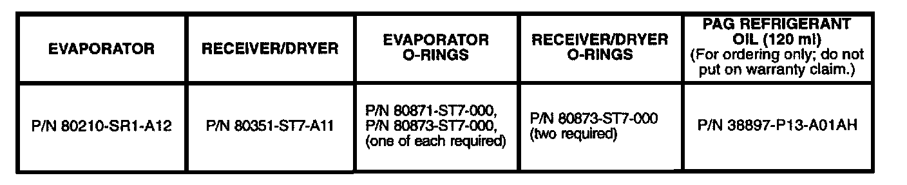
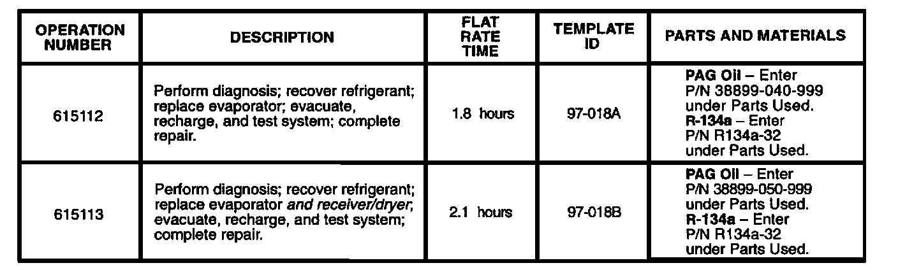

A/C Does Not Blow Cold Air
August 5,1997BULLETIN NO.
97-018
YEAR
1994-97
MODEL
INTEGRA
VIN APPLICATION
ALL
A/C Does Not Blow Cold Air
SYMPTOM
The air conditioning system does not blow cold air.
PROBABLE CAUSE
The evaporator tubes corrode from ocean salt spray, causing pinholes that allow refrigerant to leak. This problem is limited to areas where a hot, humid climate is combined with ocean air (Florida, Hawaii, Puerto Rico, or Gulf Coast areas).
CORRECTIVE ACTION
Replace only the evaporator if the vehicle comes in with some refrigerant in the high-side line. Replace both the evaporator and the receiver/dryer if the vehicle comes in without any refrigerant in the high-side line.
DIAGNOSIS
1. Remove the service port caps, and connect an approved R-134a recovery/recycling station to the vehicle.
2. Start the engine, and turn on the A/C.
3. Check the pressures. If they are below normal, charge the A/C system.
4. Using a Yokogawa or a Denso halogen leak detector, check for a leak at the evaporator:
^ Set the Fresh/Recirc button to Fresh, then turn the blower motor to High for 15 seconds.
^ Turn off the blower, and set the Fresh/Recirc button to the Recirculation position. Wait 10 minutes to allow any leaking refrigerant to accumulate in the vents.
^ Insert the probe into the center vent, and turn the blower motor to Low for about half a second, this will force any accumulated refrigerant out through the vent.
5. If you find a leak, continue to REPAIR PROCEDURE.
REPAIR PROCEDURE
1. Recover the refrigerant from the A/C system.
2. Replace the following parts according to the amount of refrigerant lost. (Refer to section 22 of the appropriate service manual.)
^ If the vehicle came in with some refrigerant in the high-side line, replace the evaporator and the 0-rings at the fittings.
^ If the vehicle came in without any refrigerant in the high-side line, replace the evaporator, the receiver/dryer, and the 0-rings at the fittings.
3. Evacuate the A/C system for 30 minutes.
4. Add the following amounts of PAG refrigerant oil to the A/C system before recharging:
^ 40 ml (1 1/3 fl-oz) if only the evaporator has been replaced.
^ 50 ml (1 2/3 fl-oz) if both the evaporator and the receiver/dryer have been replaced.
5. Recharge the A/C system with 700 grams (25 oz) of R-134a refrigerant.
6. Start the engine, and turn on the A/C. Check the air temperature at the vents.
7. If the air conditioner is blowing warm air, troubleshoot according to the appropriate service manual.
8. Disconnect the recovery/recycling station, and reinstall the service port caps.
REQUIRED SPECIAL TOOLS
Denso HLD-100 Halogen Leak Detector Kit:
Call Special Tools Department at 800-346-6327
-OR-
Yokogawa H-10P Halogen Leak Detector:
Call 800-258-2552

PARTS INFORMATION
WARRANTY CLAIM INFORMATION
In warranty: The normal warranty applies.

Failed P/N: 8O210-ST-A21
Defect code: 011
Contention code: BO2
Skill level: Repair Technician
Out of warranty: Any repair performed after warranty expiration may be eligible for goodwill consideration by the District Technical Manager or your Zone Office. You must request consideration, and get a decision, before starting work.